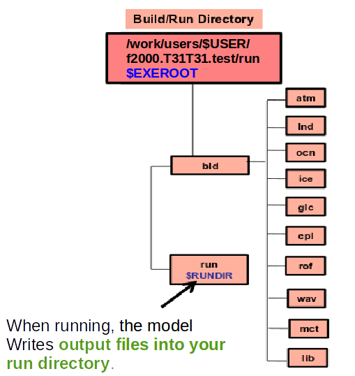
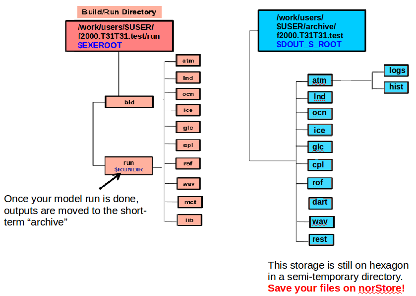

During your test case run, CAM-5.3 generates outputs in the "run" directory:

At the end of your run, the run directory will only contain files that are needed to continue an existing simulation but all the model outputs are moved to another directory (archive directory). On hexagon this directory is semi-temporary which means data will be automatically deleted after a short period of time.

Check your run was successful and generated all the necessary files you need for your analysis.
cd /work/users/$USER/f2000.T31T31.test/run
ls -lrt
cd /work/users/$USER/archive/f2000.T31T31.test/atm/hist
ls -lrt
You should see a number of netCDF files (each of them ends with ".nc").